{kind=link}
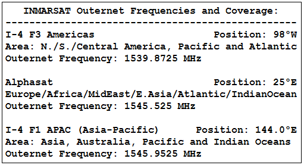 OUTERNET is a low data rate worldwide satellite downlink carried (currently) on a GEO ku band satellite with coverage over the USA to provide web content (downlink files only) to remote areas anywhere .... And the operators of this network have agreed to the idea of considering some APRS Ham radio content.
Receiver Kit: They provide a nice Rasberry Pi and Outernet software processor to capture the content. Here is their web page on receivers or their ready made products. Here is a page giving step-by-step help on configuring an Outernet Receiving system.
A HAM Summary of building a System: I was overwhelemd with the various ways to go on building a system, so Scott, K4KDR summarized it in the linked one page document here.
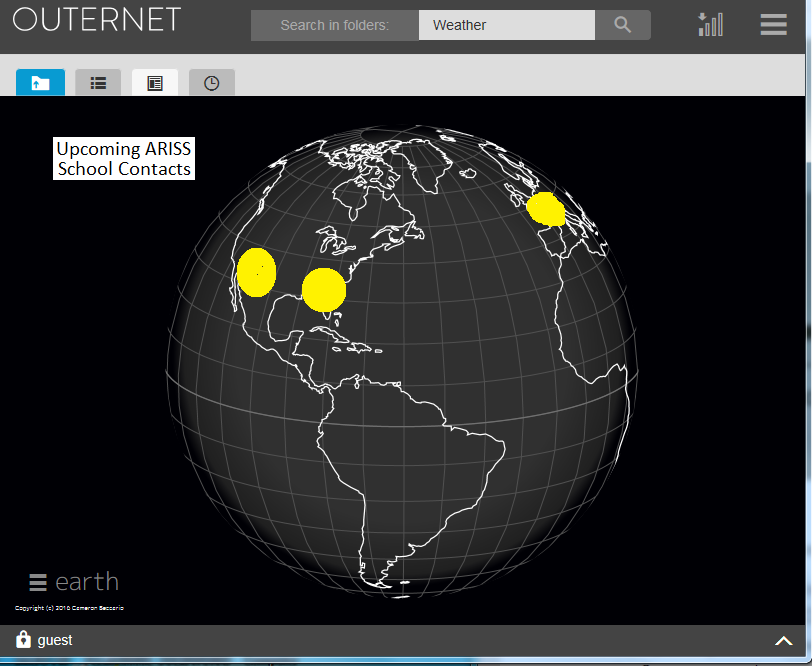 Outernet Content: The Outernet downlink feed is just a continuous stream of files that are captured by the Rasberry Pi software and are then made available via a Raspberry PI WiFi hot spot to any WiFi device in range. They have an online example of this content. Fortunately they have added an Amateur Radio Folder into which we hope to stream important relevant real-time content. Several Examples:
We think we can use this distribution channel in our mission of Amateur Radio Emergency and Disaster response... Remember, with our own HF and amateur satellite links, we are the only ones that can use this outward bound channel combined with a return path to make it 2-way remote operation... that is by using our HF and Satellite APRS links to get content back to the APRS-IS and then up and back into the Outernet feed.
The Existing APRS Network and Satellites: What we are working on is for the Outernet to simply include a very low data rate stream of APRS traffic for Ham radio operators in remote areas. Currently the APRS data stream from over 40,000 APRS users worldwide is about 20? KBPS but if we take a look at the data packets from APRS Satelilte users on the ISS downlink and the other APRS LEO satellites we see that the hourly total data file can be under about 5K per hour. These packets are all global packets routed via the ARISS or APRSAT paths.
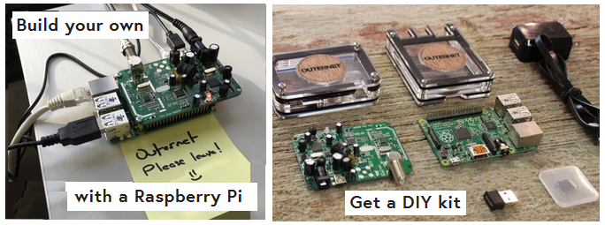 APRS OUTNET Concept PHASE-1: Initially, we want to simply stream all of the existing APRS Satellite content via these hourly files. This gives remote users something to see until we add unique OUTNET capabilities.
APRS OUTNET Concept PHASE-2: But if we defined a new path OUTNET on APRS then we could differentiate these special packets from the global APRS feed and route only the OUTNET addressed packets to the Outernet. Even if this somehow attracted say a 100 fold increase in interest compared to to the current APRS satellite users, this would still be a small APRS file and a modest load on the Outernets 2 kb bandwidth. This should be quite practical for Amateur Radio communication in globally remote locations. Of course the primary benefit to such a channel would be in the normal cause of Amateur Radio Emergency response communications. Hams in remote areas could get traffic in and out when other communications systems are down.
The APRS OUTNET DOWNlink: Currently the Outernet system is a geostarionary downlink only. It streams files freely to all users anywhere in the world. It has no user uplinks. The data stream (files) can only be uplinked from the single central Outernet 14 GHz command station.
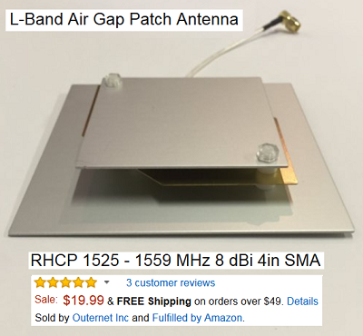 The APRS OUTNET Return Path: But APRS is a global two way system. Any APRS operator anywhere on the planet can transmit APRS messages or data back into the global APRS-IS stream using existing HF or APRS Satellite channels. Once in the APRS-IS stream, a central APRS hub, such as FINDU.COM can aggregate this return path data and send that over to the Outernet central ground station for insertion into the outbound Outernet stream back to all remote areas. The APRS-IS inbound path already exists in the inherent capabilities of all our worldwide APRS-Igates. Here are many of the APRS-IS I-Gate entry points:
APRS HF Packet Return Channel: The worldwide distribution of multiple HF Igates forms a huge Multiple Diversity HF Reception system. Although HF is noisy and not very reliable minute by minute, when we combine hundreds of HF receivers all over the globe all listening on the same 10.1473 MHz channel, the result is one of the largest space-diversity receiving networks in the world. With dozens of HF receivers always listening and only one correct decode is required, then the actual reliability of this HF system can be very reliable. When we first began using APRS in this manner on HF, we noticed a 24 hour success rate of at least one packet per 4 hour watch period, but, ignoring the overnight period, then the success rate was much closer to once an hour or better. 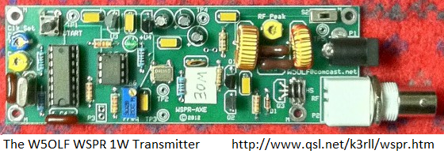
APRS HF WSPR Return Channel: This new initiative takes advantage of the tremendous processing gain of the WSPR protocol to provide another return path from remote users. Please see the APRS-WSPR web page dedicated to this exciting concept. As shown here, a simple 1W transmiiter can provide a pretty reliable link for very low data rate back to the APRS-OUTNET system. Of course, we will need to find a special channel for these APRS WSPR experiments and find a CADRE of interested WSPR individuals.ee the web page on how we can encode thousands of return messages in the WSPR protocol.
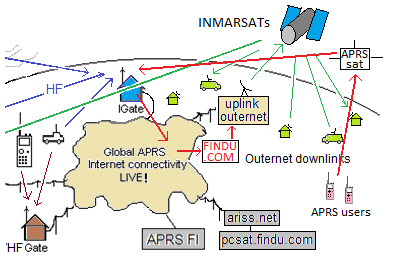 The APRS Satellite Return Channel: If you look carefully at the CONOPS diagram (top of page) but that has been zoomed-in to the remote wilderness Outernet users shown here at right, you can see how the APRS return channel works. The Ham radio operator in the remote area, with nothing more than an APRS walkie Talkie can send his position, objects and text messages via any APRS satelilte that comes into view. Shown in red is his uplink to the APRS satellite, then the downlink to any ground station IGate, then into the APRS-IS cloud where FINDU.COM aggregates the OUTNET APRS traffic and sends it to OUTERNET where it is uplinked via the Inmarsats back to worldwide distribution including back to the remote area.
There are many APRS Networked Amateur Satellites that are, or will be on Orbit in 2016 and all will appear on the live APRS downlink page and which will all feed remote user uplink packets into the global APRS-IS system.
PCsat-1 in orbit since 2001
ARISS on the ISS since 2007
Psat Now on Orbit! May 2015
QIKcom-1 Now on ISS awaiting FCC release
QIKcom-2with APRStt (DTMF) for launch Dec 2016
PSAT-2 a continuation of PSAT-1 and QIKCOM-2
HFSAT An HF linear transponder but with APRS relay too
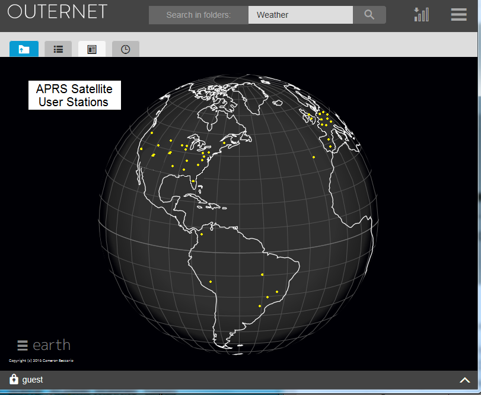 APRS OUTNET EXPERIMENTATION: Since hams are already begining to experiment with this new APRS-OUTNET capapbility, we ask any such experimenters to consider uniquely identifying their content as being part of APRS-OUTNET traffic as follows:
APRS Ground Station Network: The map above at right shows the best ground stations in the APRS Satellite Network. Although there are hundreds of volunteer Igates at any one time, many only receive the stronger signals from the ISS. You can see their calls in the raw packets at the bottom of the live ARISS.NET page. But the ones here are the only ones that have IGated PSAT packets to the APRS-IS (internet system). Since the ISS signal is as much as 14 dB stronger (10W versus 0.35W for PSAT), only IGates with good weak signal performace (and usually tracking antennas) are successful with PSAT. As you can see, we need additional IGates in Hawaii, India, China and the Southern Hemisphere.
 Best Satellite IGATE Antenna: The best IGate antenna is an OMNI (so it does not wear out or require rotators) and it has high gain above about 30 degrees and less gain on the horizon (where it cannot hear
a 350 mW satellite anyway).
See (SatGate Antennas) Not only is the gain higher at these elevations, but the satellite is also
6dB closer, thus giving a combined gain of nearly 13 dBi similar to an OSCAR class beam.
Another reason for minimizing gain on the horizon is the Donut-Hole NULL effect where any IGate that hears a
user station direct will send that into the APRS-IS first and that will cause the
subsequent space digipeated packet to be a DUPE and will be ignored by all IGates. So a mobile or
terrestrial omni is the worst omni (maximizes gain on horizon and usually has a null around 20 or 30
degrees which is where the satellite is best located!
Best Satellite IGATE Antenna: The best IGate antenna is an OMNI (so it does not wear out or require rotators) and it has high gain above about 30 degrees and less gain on the horizon (where it cannot hear
a 350 mW satellite anyway).
See (SatGate Antennas) Not only is the gain higher at these elevations, but the satellite is also
6dB closer, thus giving a combined gain of nearly 13 dBi similar to an OSCAR class beam.
Another reason for minimizing gain on the horizon is the Donut-Hole NULL effect where any IGate that hears a
user station direct will send that into the APRS-IS first and that will cause the
subsequent space digipeated packet to be a DUPE and will be ignored by all IGates. So a mobile or
terrestrial omni is the worst omni (maximizes gain on horizon and usually has a null around 20 or 30
degrees which is where the satellite is best located!
The best Satellite OMNI Igate antenna is a non-gain 1/4 wave vertical (19.5" over a large ground plane). Even better (+2 dB) is a 3/4 wave vertical (58" high) over a large ground plane shown here. It has nearly 7 dBi gain above 30 degrees, plus the +6 dBi closer range gain and not much at all on the horizon. It is best placed low in the yard to further minimize horizon gain as shown here.
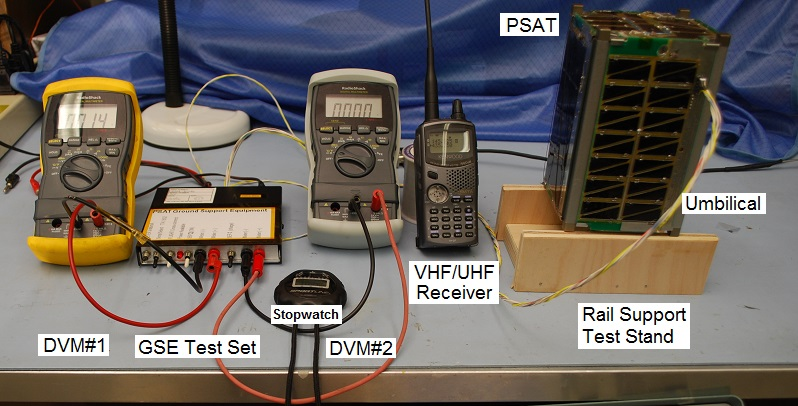 APRS SATELLITE OVERVIEW: PSAT (NO-84) is the latest Naval Academy student satellite project that joins PCSAT and ISS on orbit in 2015 and the three others in the pipeline awaiting launch and two more in work. These small student built satellites contain an APRS packet radio communications transponder for relaying remote telemetry, sensor and user data from remote users and amateur radio experiments or other data sources back to Amateur Radio experimenters via a global network of internet linked volunteer ground stations. The data transponder also includes all telemetry, command and control for a complete cubesat. Secondary transponders on some of them support multi-user PSK31 text messaging users via a Brno University transponder.
See the Psat paper
Operations in the Amateur Satellite Service: All of these VHF APRS transponders operate in the Amateur Satellite Service to encourage amateur radio students, educators and experimenters around the world to contribute additional satellities to this constellation on 145.825 MHz or to build interesting self motivated remote sensors suitable for the uplink channel. See our ocean or bay oceanographic data buoys for examples. This kind of Amateur Radio experimentation fits well in the ITU rules (see Psat justification) for operating in this service and well serve our educational and outreach goals for student projects encouraging young people to be interested in Science, Technology, Engineering and Math.
APRS Packet Transponder: The APRS packet transponder is an AX.25 Packet Radio Relay similar to what is flying on PCsat and the ISS. This ongoing mission in space on the original PCsat is now over 12 years old and pioneered this very popular operating mode via the ISS since 2006. Both of these missions deliver packets to users worldwide via the global network of volunteer ground stations feeding the two downlink capture pages: psat.aprs.org and ariss.net. These pages display live maps such as the one above, of the most recent user position data and capture all message traffic between users. See the APRS link budgets. In addition there is also a PSK31 transponder as noted below.
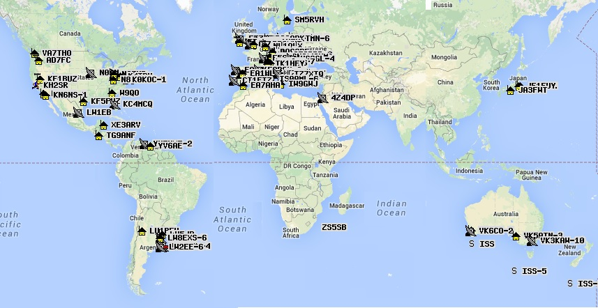
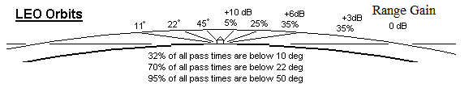 APRS Satellite Low-Earth Orbits:
The downlink OUTERNET satellites are all in Geostationary orbits over 36,000 km above earth and so they appear at a fixed location high in the sky. You just point your antenna at it and receive the very weak signal with a dish antenna. In contrast, the orbits for these APRS satellites are only about 400 km high providing passes only about ten minutes long and going from horizon to horizon as shown here. But being 100 times closer, the signal required to uplink to them is much much less, on the order of 5 watts. The typical user beacons his 1 second position and status data about once every 2 minutes. This guarantees that one of the many APRS satellites will hear the data, repeat it down to a nearby ground station which interjects it into the APRS-IS which distributes it to the Outernet uplink station, to the Outernet GEO sateliltes for dowlink into all remote areas of the world.
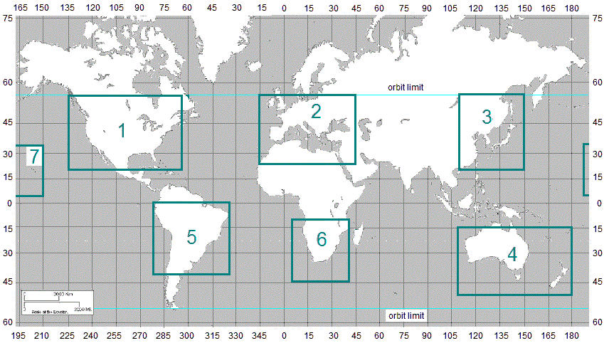 PSAT Position Reporting: PSAT like every other APRS Station has the capability to send its live position once every minute so that its location appears on the front panel of all APRS user radios so they can know which way to point their antennas. But rather than flying a very expensive space rated GPS, we simply use the fact that the orbit is fixed and so PSAT can run a 95.16 minute Mean Anomoly clock synced to the orbit period and then use a table of LAT/LONG values to downlink its position based on the minuute in the 95.16 minute orbit. Then every orbit the clock tics over, the longitude is shifted by the oribtal longitude increment and the next orbit of position reporting begins.
Continetnal Bulletins: Since the above scheme allows PSAT to know where it is, then it can use that information to customize its bulletins to match the continent that it is over at the time. We have programmed PSAT to send unique bulletins over the LAT/LONG continental boxes shown here. There are three possible beacons for each continent. They are alternated every minute.
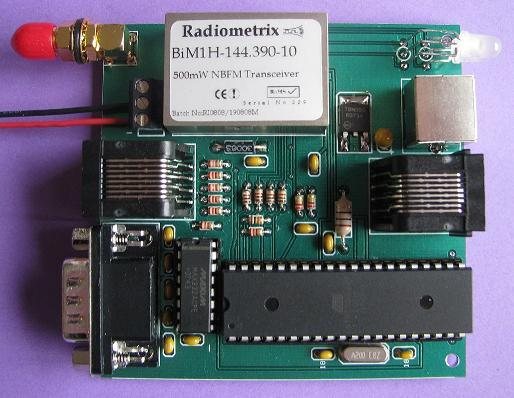 Global Experimental Data Channel: These APRS Satellites are the space segment of this initiative to encourage both new satellite construction in support of this experimental data channel and lower cost buoy and sensor experimentation at other schools. Today, these APRS satellites are about the only Amateur Satellites that are available for Amateur Radio and student experimenters. But now with Outernet, this opens up an whole new element of two-way global communications. It is the perfect marriage. Outernet providing the global continuous full time downlink everywhere on earth and APRS providing the uplink via a variety of input methods that can also extend anywhere on earth. To this end we hope other schools and Amateur Radio volunteers will either build additional 145.825 MHz relay satellites and/or build more HF Igates and/or SATgates. For the User terminals or even a small satellite releay itself, the complete APRS packet comms system including data transponder fits on one 3.4 inch square card shown here. We hope that these APRS satellites (PSAT for example) will be the Egg in this chicken-egg conundrum and Outernet will partner to provide a seamless system.
Bob Bruninga, WB4APR
lastname at usna dot edu